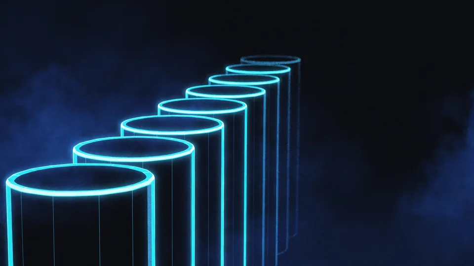

When Is a Studio the Right Choice for a Product Video Shoot?
If you want to show the product on its own, flawlessly and repeatably, the studio is right. In a controlled environment the light, the background and the angle stay fixed; the twentieth product comes out like the first. Catalogues, marketplaces and products with variants fall into this group. Here the product video shoot turns into a production line.
Constancy is the biggest gain. Shooting thirty products on the same setup is both quicker and cheaper than making thirty separate setups. On products with many colour options that difference grows further still.
A controlled environment brings four concrete gains.
- Light — independent of the hour and the weather.
- Background — the same in every frame.
- Angle — the setup is fixed, the scale comparable.
- Speed — set up once, shoot in series.
And then there is being able to rebuild the same arrangement. Add a new product six months later and you can set up the same arrangement and produce a video that matches the catalogue. On location, catching the same light a second time is very nearly impossible.
Does the Studio Have to Be Hired?
Not necessarily. A white wall, two lights and a flat floor will do for small products. As the product grows and difficult surfaces such as glass and metal come into it, a properly equipped controlled environment becomes necessary.
In Which Situation Does a Real Location Come Ahead?
If you need to show how the product is used, the real setting wins. A food processor looks more credible in a kitchen, a bicycle on the road. Context carries the feeling, and the viewer sees themselves in that scene. Here the product video shoot serves the story, not the catalogue. Catalogue cleanliness comes second.
The price of a real setting is control. The light changes by the hour, noise creeps in, and the load of permits and transport appears. What you gain in return is a sense of reality that cannot be manufactured in a studio.
On social channels that feeling is more useful still. A video showing the moment of use gets watched more than a flawless shot on a plinth; we took up the effect of the choice of channel in the social media advertising article.
On location there is time pressure as well. If you have a shot that has to be taken while the sun is at a particular angle, that window is narrow within the day. A crew that knows this plans for it; a crew that doesn't leaves the same shot to the following day. Every postponed shot grows the next day's budget. Using a location requires written permission; Türkiye's copyright and permissions legislation heads off the problems that surface later.
Does Our Own Office Count as a Location?
It does, and it is often the most practical option. It removes the hire and the permit items. But the sound insulation and the way the window light changes through the day are two genuine risks; both need measuring in advance.
How Many Variants Will You Shoot?
This question often settles the decision on its own. On a three-product shoot the difference in location isn't felt; at thirty variants, repeating the setup becomes decisive. Making the lighting setup once and shooting in series is the studio's fundamental advantage. As the scale grows, the product video shoot drifts towards the controlled environment.
Stating the number of variants up front matters too. The crew designs the setup around it; adding ten products afterwards may not be possible without breaking the arrangement.
File organisation is part of the job on a series shoot. If each product's code isn't written into the file name, matching up thirty videos takes hours. That detail seems small but it saves delivery day.
The order gains you speed too. Shooting products from the same colour group one after another saves you resetting the light every time. Mixing dark and light products tires the setup for nothing.
Is It Possible to Combine the Two?
It is, and it's a route we take often. You shoot the product cleanly in the studio and take the moment of use in the real setting. Using two sources in the same video calls for colour matching at the editing stage.
Which Kind of Product Asks for Which Route?
Small, single products whose detail comes to the fore ask for the studio. Jewellery, cosmetics and electronic accessories are in that group. Large products, or ones that need using or that take on meaning through a setting, ask for the real thing. Furniture, sports equipment and white goods stand on that side. The product video shoot decision passes through this distinction first.
Difficult surfaces are a heading of their own. Glass, mirror and polished metal reflect the light; shooting them on location means wrestling with reflections. In a controlled environment, you are the one managing the reflection.
Food is another field with rules of its own. The look of freshness is short-lived and the shoot has to move quickly; that makes a setting with the setup already in place the advantageous one.
The Packaging, or the Product Itself?
The two ask for different shoots. Packaging asks for flat surfaces and legible type; the product itself asks for texture and detail. On marketplace listings you have to show both, so we build the setup to suit the pair of them.
“The studio shows the product; the location shows the use. Which of them you need is told you not by the product but by your purpose in publishing.”
— TasarımMania production note
How Do You Take the Decision?
Answer four questions in order: how many variants are there, does the product take on meaning through a setting, is its surface difficult, and where will the video be published? If most of the answers say repetition and control, the studio comes ahead. If they say use and context, the real setting wins. The product video shoot decision is the sum of those four answers.
Where it will be published comes into the table too. Marketplace listings want a clean, uniform image; social channels reward context and movement. If you are publishing to both, two separate shooting plans may be needed.
Discuss the effect on the budget at the same table. We opened up how the number of setups grows the cost in the cost items article; the variety of locations creates the same multiplier on a product video. We listed the delivery ratios in the product video formats article.
There is a time criterion as well. A location shoot depends on outside factors such as the weather, permits and traffic; the schedule is more fragile. If your delivery date is tight, a controlled environment offers safer ground.
Let's Choose Your Shooting Location Together
The decision isn't a choice of venue on its own. We weigh the kind of product, the number of variants and the place of publication together. What you are left with is not the name of a location but the reasoning behind the choice. When the product video shoot is planned on that reasoning, no second shoot is needed. A wrongly chosen location usually means a second shoot.
In the meeting we tick off the four criteria one by one and write down together which one carries the most weight. Our product video service and our video production page are both there to look through.
Planning the visual production from a single hand makes things easier too. It is possible to take both video and photographs from the same setup; we set the approach out in the product photography article.
You leave the session with a single page in hand: the product list, the setup plan and the delivery formats. That page is what reduces the need for a second shoot to a minimum. Most second shoots come from a question that wasn't asked at the first.

Studio versus a real location: a criterion-by-criterion comparison
| Criterion | Studio | Real location |
|---|---|---|
| Control of the light | Total; you set it up | Limited; tied to the hour |
| Repeatability | High; you rebuild the same arrangement | Low; it can't be caught a second time |
| Context and credibility | Weak; the product stands alone | Strong; it shows the moment of use |
| Shoots with many variants | At an advantage; runs in series | Slow; every setup from scratch |
| Difficult surfaces (glass, metal) | Reflections are managed | Reflections cause trouble |
| Preparation load | Setup once | Permits, transport, closing off |
The product video shoot decision isn't a contest of superiority between studio and location. If you need to show the product on its own and repeatably, the controlled environment wins; if you need to show its use and its context, the real setting does.